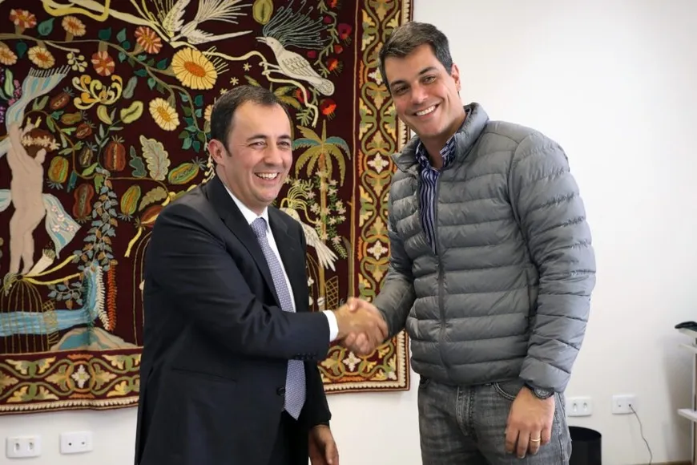

Nosso objetivo é mantê-lo informado sobre as mais diversas notícias desse setor.

FOTO: FAEP/SENAR/PR
FAEP/SENAR-PR e PUCPR firmam parceria para capacitação profissional  Enchentes no Rio Grande do Sul Afetam Projeções de Embarque de Soja no Brasil
Enchentes no Rio Grande do Sul Afetam Projeções de Embarque de Soja no Brasil